前言
小到基于应用层做网络开发，大到生活中无处不在的网络。我们在享受这个便利的时候，没有人会关心它如此牢固的底层基石是如何搭建的。而这些基石中很重要的一环就是tcp协议。翻看一下“三次握手”和“四次挥手”，本以为这就是tcp了，其实不然。它仅仅解决了连接和关闭的问题，传输的问题才是tcp协议更重要，更难，更复杂的问题。回头看tcp协议的原理，会发现它为了承诺上层数据传输的“可靠”，不知要应对多少网络中复杂多变的情况。简单直白列举一下：
- 怎么保证数据都是可靠呢？—
连接确认！关闭确认！收到数据确认！各种确认！！ - 因为网络或其他原因，对方收不到数据怎么办？–
超时重试 - 网络情况千变万化，超时时间怎么确定？–根据
RTT动态计算 - 反反复复，不厌其烦的重试，导致网络拥塞怎么办？—
慢启动，拥塞避免，快速重传，快速恢复 - 发送速度和接收速度不匹配怎么办？–
滑动窗口 - 滑动窗口滑的过程中，他一直告诉我处理不过来了，不让传数据了怎么办？–
ZWP - 滑动窗口滑的过程中，他处理得慢，就理所当然的每次让我发很少的数据，导致网络利用率很低怎么办？—
Nagle
其中任何一个小环节，都凝聚了无数的算法，我们没有能力理解各个算法的实现，但是需要了解下tcp实现者的思路历程。
梳理完所有内容，大概可以知道：
- tcp提供哪些机制保证了数据传输的可靠性？
- tcp连接的“三次握手”和关闭的“四次挥手”流程是怎么样的？
- tcp连接和关闭过程中，状态是如何变化的？
- tcp头部有哪些字段，分别用来做什么的？
- tcp的滑动窗口协议是什么？
- 超时重传的机制是什么？
- 如何避免传输拥塞？
概述
tcp连接的特点
- 提供面向
连接的，1可靠1的1字节流1服务 - 为上层应用层提供服务，不关心具体传输的内容是什么，也不知道是二进制流，还是ascii字符。
tcp的可靠性如何保证
- 分块传送：数据被分割成最合适的数据块（UDP的数据报长度不变）
- 等待确认：通过定时器等待接收端发送确认请求，收不到确认则重发
- 确认回复：收到确认后发送确认回复(不是立即发送，通常推迟几分之一秒)
- 数据校验：保持首部和数据的校验和，检测数据传输过程有无变化
- 乱序排序：接收端能重排序数据，以正确的顺序交给应用端
- 重复丢弃：接收端能丢弃重复的数据包
- 流量缓冲：两端有固定大小的缓冲区（滑动窗口），防止速度不匹配丢数据
tcp的首部格式
宏观位置
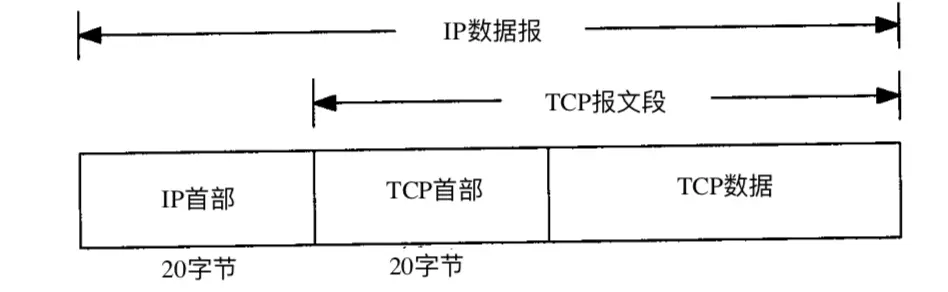
- 从应用层->传输层->网络层->链路层，每经过一次都会在报文中增加相应的首部。
- TCP数据被封装在IP数据报中
首部格式
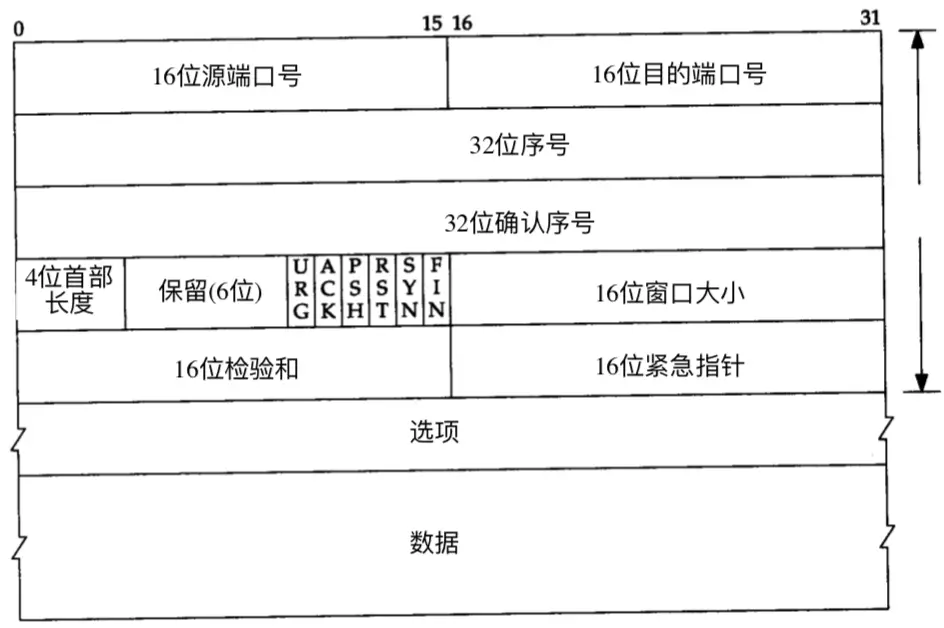
tcp首部数据通常包含20个字节（不包括任选字段）
第1-2两个字节：源端口号
第3-4两个字节：目的端口号
源端口号+ip首部中的源ip地址+目的端口号+ip首部中的目的ip地址，唯一的确定了一个tcp连接。对应编码级别的socket。
第5-8四个字节：32位序号。tcp提供全双工服务，两端都有各自的序号。
编号：解决网络包乱序的问题
序号如何生成：不能是固定写死的，否则断网重连时序号重复使用会乱套。tcp基于时钟生成一个序号，每4微秒加一，到2^32-1时又从0开始
第9-12四个字节：32位确认序列号。上次成功收到数据字节序号加1，ack为1才有效。确认号：解决丢包的问题
第13位字节：首部长度。因为任选字段长度可变
后面6bite：保留
随后6bite：标识位。控制各种状态
第15-16两个字节：窗口大小。接收端期望接收的字节数。解决流量控制的问题
第17-18两个字节：校验和。由发送端计算和存储，由接收端校验。解决数据正确性问题
第19-20两个字节：紧急指针
标识位说明
- URG：为1时，表示紧急指针有效
- ACK：确认标识，连接建立成功后，总为1。为1时确认号有效
- PSH：接收方应尽快把这个报文交给应用层
- RST：复位标识，重建连接
- SYN：建立新连接时，该位为0
- FIN：关闭连接标识
tcp选项格式
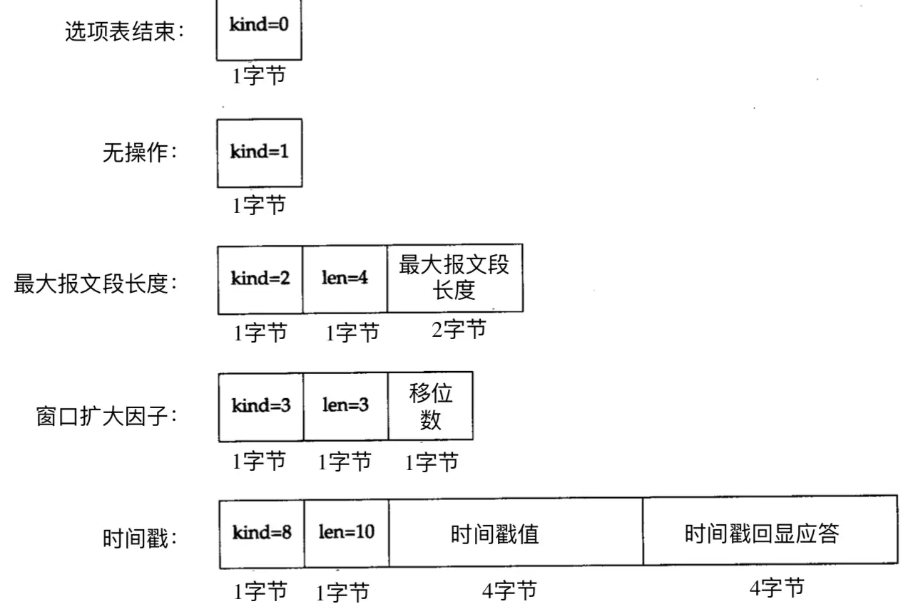
- 每个选项开始是1字节kind字段，说明选项的类型
- kind为0和1的选项，只占一个字节
- 其他kind后有一字节len，表示该选项总长度（包括kind和len）
- kind为11，12，13表示tcp事务
MSS 最长报文大小
- 最常见的可选字段
- MSS只能出现在SYN时传过来（第一次握手和第二次握手时）
- 指明本端能接收的最大长度的报文段
- 建立连接时，双方都要发送MSS
- 如果不发送，默认为536字节
连接的建立与释放
连接建立的“三次握手”
三次握手流程
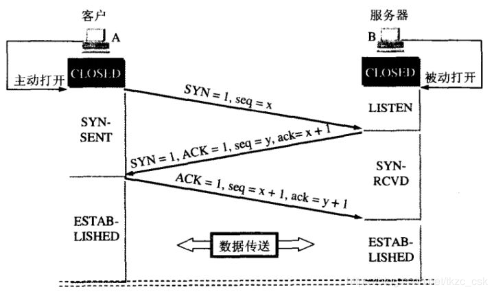
TCP协议中，主动发起请求的一端称为『客户端』，被动连接的一端称为『服务端』。不管是客户端还是服务端，TCP连接建立完后都能发送和接收数据。
起初，服务器和客户端都为CLOSED状态。在通信开始前，双方都得创建各自的传输控制块（TCB）。
服务器创建完TCB后遍进入LISTEN状态，此时准备接收客户端发来的连接请求。
第一次握手
客户端向服务端发送连接请求报文段。该报文段的头部中SYN=1，ACK=0，seq=x。请求发送后，客户端便进入SYN-SENT状态。
1 | PS1：SYN=1，ACK=0表示该报文段为连接请求报文。 |
第二次握手
服务端收到连接请求报文段后，如果同意连接，则会发送一个应答：SYN=1，ACK=1，seq=y，ack=x+1。
该应答发送完成后便进入SYN-RCVD状态。
1 | PS1：SYN=1，ACK=1表示该报文段为连接同意的应答报文，ACK为1表示ack字段有效。 |
第三次握手
当客户端收到连接同意的应答后，还要向服务端发送一个确认报文段，表示：服务端发来的连接同意应答已经成功收到。
该报文段的头部为：ACK=1，seq=x+1，ack=y+1。
客户端发完这个报文段后便进入ESTABLISHED状态，服务端收到这个应答后也进入ESTABLISHED状态，此时连接的建立完成！
为什么连接建立需要三次握手，而不是两次握手？
防止失效的连接请求报文段被服务端接收，从而产生错误。
1 | PS：失效的连接请求：若客户端向服务端发送的连接请求丢失，客户端等待应答超时后就会再次发送连接请求，此时，上一个连接请求就是『失效的』。 |
若建立连接只需两次握手，客户端并没有太大的变化，仍然需要获得服务端的应答后才进入ESTABLISHED状态，而服务端在收到连接请求后就进入ESTABLISHED状态。此时如果网络拥塞，客户端发送的连接请求迟迟到不了服务端，客户端便超时重发请求，如果服务端正确接收并确认应答，双方便开始通信，通信结束后释放连接。此时，如果那个失效的连接请求抵达了服务端，由于只有两次握手，服务端收到请求就会进入ESTABLISHED状态，等待发送数据或主动发送数据。但此时的客户端早已进入CLOSED状态，服务端将会一直等待下去，这样浪费服务端连接资源。
之所以存在 3-way hanshake 的说法，是因为 TCP 是双向通讯协议，作为响应一方(Responder) 要想初始化发送通道，必须也进行一轮 SYN + ACK。由于 SYN ACK 在 TCP 分组头部是两个标识位，因此处于优化目的被合并了。所以达到双方都能进行收发的状态只需要 3 个分组。
在谢希仁著《计算机网络》第四版中讲“三次握手”的目的是“为了防止已失效的连接请求报文段突然又传送到了服务端，因而产生错误”。在另一部经典的《计算机网络》一书中讲“三次握手”的目的是为了解决“网络中存在延迟的重复分组”的问题。这两种不用的表述其实阐明的是同一个问题。
谢希仁版《计算机网络》中的例子是这样的，“已失效的连接请求报文段”的产生在这样一种情况下：client发出的第一个连接请求报文段并没有丢失，而是在某个网络结点长时间的滞留了，以致延误到连接释放以后的某个时间才到达server。本来这是一个早已失效的报文段。但server收到此失效的连接请求报文段后，就误认为是client再次发出的一个新的连接请求。于是就向client发出确认报文段，同意建立连接。假设不采用“三次握手”，那么只要server发出确认，新的连接就建立了。由于现在client并没有发出建立连接的请求，因此不会理睬server的确认，也不会向server发送数据。但server却以为新的运输连接已经建立，并一直等待client发来数据。这样，server的很多资源就白白浪费掉了。采用“三次握手”的办法可以防止上述现象发生。例如刚才那种情况，client不会向server的确认发出确认。server由于收不到确认，就知道client并没有要求建立连接。
连接关闭的“四次挥手”
四次挥手流程
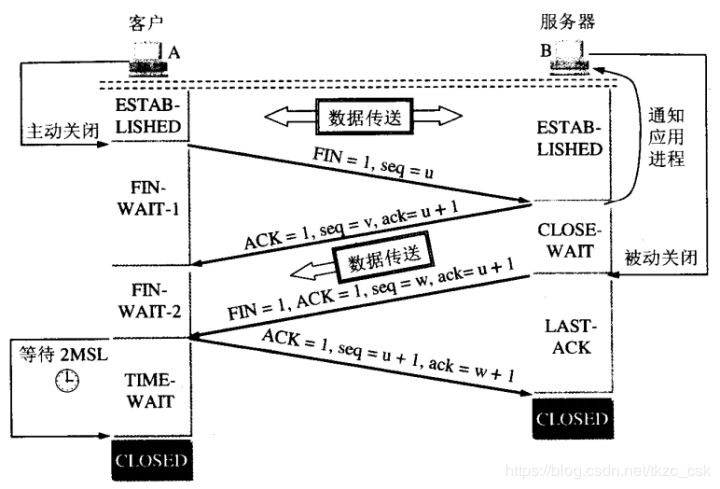
TCP连接的释放一共需要四步，因此称为『四次挥手』。
我们知道，TCP连接是双向的，因此在四次挥手中，前两次挥手用于断开一个方向的连接，后两次挥手用于断开另一方向的连接。
第一次挥手
若A认为数据发送完成，则它需要向B发送连接释放请求。该请求只有报文头，头中携带的主要参数为：
FIN=1，seq=u。此时，A将进入FIN-WAIT-1状态。
1 | PS1：FIN=1表示该报文段是一个连接释放请求。 |
第二次挥手
B收到连接释放请求后，会通知相应的应用程序，告诉它A向B这个方向的连接已经释放。此时B进入CLOSE-WAIT状态，并向A发送连接释放的应答，其报文头包含：
ACK=1，seq=v，ack=u+1。
1 | PS1：ACK=1：除TCP连接请求报文段以外，TCP通信过程中所有数据报的ACK都为1，表示应答。 |
A收到该应答，进入FIN-WAIT-2状态，等待B发送连接释放请求。
第二次挥手完成后，A到B方向的连接已经释放，B不会再接收数据，A也不会再发送数据。但B到A方向的连接仍然存在，B可以继续向A发送数据。
第三次挥手
当B向A发完所有数据后，向A发送连接释放请求，请求头：FIN=1，ACK=1，seq=w，ack=u+1。B便进入LAST-ACK状态。
第四次挥手
A收到释放请求后，向B发送确认应答，此时A进入TIME-WAIT状态。该状态会持续2MSL时间，若该时间段内没有B的重发请求的话，就进入CLOSED状态，撤销TCB。当B收到确认应答后，也便进入CLOSED状态，撤销TCB。
为什么A要先进入TIME-WAIT状态，等待2MSL时间后才进入CLOSED状态？
为了保证B能收到A的确认应答。
若A发完确认应答后直接进入CLOSED状态，那么如果该应答丢失，B等待超时后就会重新发送连接释放请求，但此时A已经关闭了，不会作出任何响应，因此B永远无法正常关闭。
time_wait状态
- 也称为
2MSL等待状态，MSL=Maximum Segment LifetIme，报文段最大生存时间，根据不同的tcp实现自行设定。常用值为30s，1min，2min。linux一般为30s。
1 | MSL是Maximum Segment Lifetime英文的缩写，中文可以译为“报文最大生存时间”，他是任何报文在网络上存在的最长时间，超过这个时间报文将被丢弃。因为tcp报文（segment）是ip数据报（datagram）的数据部分，具体称谓请参见《数据在网络各层中的称呼》一文，而ip头中有一个TTL域，TTL是time to live的缩写，中文可以译为“生存时间”，这个生存时间是由源主机设置初始值但不是存的具体时间，而是存储了一个ip数据报可以经过的最大路由数，每经过一个处理他的路由器此值就减1，当此值为0则数据报将被丢弃，同时发送ICMP报文通知源主机。RFC 793中规定MSL为2分钟，实际应用中常用的是30秒，1分钟和2分钟等。 |
- 主动关闭的一方发送最后一个ack所处的状态
- 这个状态必须维持2MSL等待时间
为什么SYN和FIN会消耗一个序列号
为什么在建立连接的时候，发送的 SYN 包大小（payload）明明是0字节，但是接收端却返回 ACK = 1 ，还有断开连接的时候 FIN 包也被视为含有1字节的数据。
原因是 SYN 和 FIN 信号都是需要 acknowledgement (确认)的，也就是你必须回复这个信号，如果它不占有一个字节的话，要如何判断你是回复这个信号还是回复这个信号之前的包呢？
例如：如果 FIN 信号不占用一个字节，回复 FIN 的 ack 包就可能被误认为是回复之前的数据包被重新发送了一次，第二次挥手无法完成，连接也就无法正常关闭了。
复位报文段
一个报文段从源地址发往目的地址，只要出现错误，都会发出复位的报文段，首部字段的RST是用于“复位”的。这些错误包括以下情况
- 端口没有在监听
- 异常中止：通过发送RST而不是fin来中止连接
同时打开
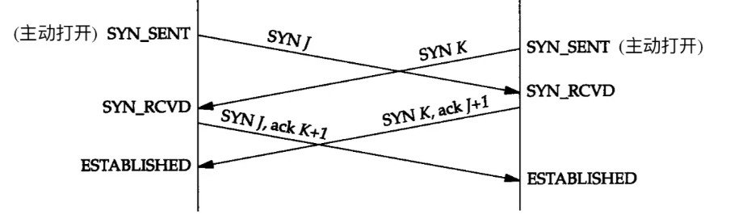
- 两个应用程序同时执行主动打开，称为“同时打开“
- 这种情况极少发生
- 两端同时发送SYN，同时进入SYN_SENT状态
- 打开一条连接而不是两条
- 要进行四次报文交换过程，“四次握手”
同时关闭
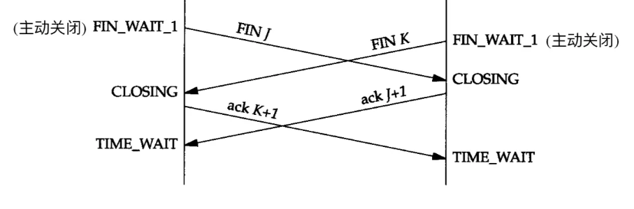
- 双方同时执行主动关闭
- 进行四次报文交换
- 状态和正常关闭不一样
服务器对于并发请求的处理
- 正等待连接的一端有一个固定长度的队列（长度叫做“积压值”，大多数情况长度为5）
- 该队列中的连接为：已经完成了三次握手，但还没有被应用层接收（应用层需要等待最后一个ack收到后才知道这个连接）
- 应用层接收请求的连接，将从该队列中移除
- 当新的请求到来时，先判断队列情况来决定是否接收这个连接
- 积压值的含义：tcp监听的端点已经被tcp接收，但是等待应用层接收的最大值。与系统允许的最大连接数，服务器接收的最大并发数无关
数据的传输
tcp传输的数据分类
- 成块数据传输：量大，报文段常常满
- 交互数据传输：量小，报文段为微小分组，大量微小分组，在广域网传输会增加拥堵的出现
- tcp处理的数据包括两类，有不同的特点，需要不同的传输技术
交互数据的传输技术
经受时延的确认
- 概念：tcp收到数据时，并不立马发送ack确认，而是稍后发送
- 目的：将ack与需要沿该方向发送的数据一起发送，以减少开销
- 特点：接收方不必确认每一个收到的分组，ACK是累计的，它表示接收方已经正确收到了一直到确认序号-1的所有字节
- 延时时间：绝大多数为200ms。不能超过500ms
Nagle算法
- 解决什么问题：微小分组导致在广域网出现的拥堵问题
- 核心：减少了通过广域网传输的小分组数目
- 原理：
要求一个tcp连接上最多只能有一个未被确认的未完成的分组，该分组的确认到达之前，不能发送其他分组。tcp收集这些分组，确认到来之前以一个分组的形式发出去 - 优点：自适应。确认到达的快，数据发送越快。确认慢，发送更少的组。
- 使用注意：局域网很少使用该算法。且有些特殊场景需要禁用该算法
成块数据的传输
- 主要使用滑动窗口协议
滑动窗口协议
概述
- 解决了什么问题：
发送方和接收方速率不匹配时，保证可靠传输和包乱序的问题 - 机制：接收方根据目前缓冲区大小，通知发送方目前能接收的最大值。发送方根据接收方的处理能力来发送数据。通过这种协调机制，防止接收端处理不过来。
- 窗口大小：接收方发给发送端的这个值称为窗口大小
tcp缓冲区的数据结构
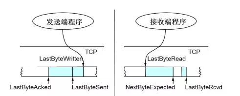
- 接收端：
- LastByteRead: 缓冲区读取到的位置
- NextByteExpected：收到的连续包的最后一个位置
- LastByteRcvd：收到的包的最后一个位置
- 中间空白区：数据没有到达
- 发送端：
- LastByteAcked: 被接收端ack的位置，表示成功发送确认
- LastByteSent：发出去了，还没有收到成功确认的Ack
- LastByteWritten：上层应用正在写的地方
滑动窗口示意图
初始时示意图
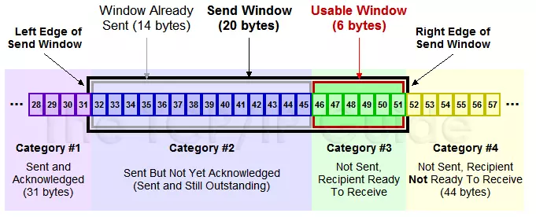
- 黑框表示滑动窗口
- #1表示收到ack确认的数据
- #2表示还没收到ack的数据
- #3表示在窗口中还没有发出的（接收方还有空间）
- #4窗口以外的数据（接收方没空间）
滑动过程示意图
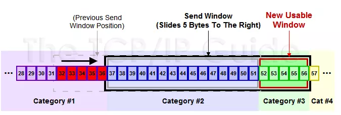
- 收到36的ack，并发出46-51的字节
拥塞窗口
- 解决什么问题：发送方发送速度过快，导致中转路由器拥堵的问题
- 机制：发送方增加一个拥塞窗口（cwnd），每次收到ack，窗口值加1。发送时，
取拥塞窗口和接收方发来的窗口大小取最小值发送 - 起到发送方流量控制的作用
滑动窗口会引发的问题
零窗口
- 如何发生： 接收端处理速度慢，发送端发送速度快。窗口大小慢慢被调为0
- 如何解决：ZWP技术。发送zwp包给接收方，让接收方ack他的窗口大小。
糊涂窗口综合征
- 如何发生：接收方太忙，取不完数据，导致发送方越来越小。最后只让发送方传几字节的数据。
- 缺点：数据比tcp和ip头小太多，网络利用率太低。
- 如何解决：避免对小的窗口大小做响应。
- 发送端：前面说到的Nagle算法。
- 接收端：窗口大小小于某个值，直接ack（0），阻止发送数据。窗口变大后再发。
超时与重传
概述
- tcp提供可靠的运输层，使用的方法是
确认机制。 - 但是数据和确认都有可能丢失
- tcp通过在发送时
设置定时器解决这种问题 - 定时器时间到了还没收到确认，就重传该数据
tcp管理的定时器类型
- 重传定时器：等待收到确认
- 坚持定时器：使窗口大小信息保持不断流动
- 保活定时器：检测空闲连接崩溃或重启
- 2MSL定时器：检测time_wait状态
超时重传机制
背景
- 接收端给发送端的Ack确认只会确认最后一个连续的包
- 比如发送1,2,3,4,5共五份数据，接收端收到1,2，于是回ack3，然后收到4（还没收到3），此时tcp不会跳过3直接确认4，否则发送端以为3也收到了。这时你能想到的方法是什么呢？tcp又是怎么处理的呢？
被动等待的超时重传策略
- 直观的方法是：接收方不做任何处理，等待发送方超时，然后重传。
- 缺点：发送端不知道该重发3，还是重发3,4,5
- 如果发送方如果只发送3：节省宽度，但是慢
- 如果发送方如果发送3,4,5：快，但是浪费宽带
- 总之，都在被动等待超时，超时可能很长。所以tcp不采用此方法
主动的快速重传机制
概述
- 名称为：Fast Retransmit
- 不以实际驱动，而以数据驱动重传
实现原理
如果包没有送达，就一直ack最后那个可能被丢的包
发送方连续收到3相同的ack，就重传。不用等待超时
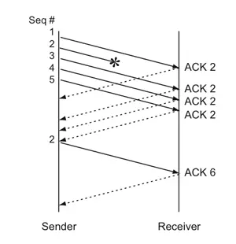
图中发生1,2,3,4,5数据
数据1到达，发生ack2
数据2因为某些原因没有送到
后续收到3的时候，接收端并不是ack4，也不是等待。而是主动ack2
收到4,5同理，一直主动ack2
客户端收到三次ack2，就重传2
2收到后，结合之前收到的3,4,5，直接ack6
快速重传的利弊
- 解决了被动等待timeout的问题
- 无法解决重传之前的一个，还是所有的问题。
- 上面的例子中是重传2，还是重传2,3,4,5。因为并不清楚ack2是谁传回来的
SACK方法
概述
- 为了解决快速重传的缺点，一种更好的SACK重传策略被提出
- 基于快速重传，同时在
tcp头里加了一个SACK的东西 - 解决了什么问题：客户端应该发送哪些超时包的问题
实现原理
- SACK记录一个数值范围，表示哪些数据收到了
- linux2.4后默认打开该功能，之前版本需要配置tcp-sack参数
- SACK只是一种辅助的方式，发送方不能完全依赖SACK。主要还是依赖ACK和timout
Duplicate SACK(D-SACK)
- 使用SACK标识的范围，还可以知道告知发送方，有哪些数据被重复接收了
- 可以让发送方知道：是发出去的包丢了，还是回来的ack包丢了
超时时间的确定
背景
- 路由器和网络流量均会变化
- 所以超时时间肯定不能设置为一个固定值
- 超时长：重发慢，效率低，性能差
- 超时短：并没有丢就重发，导致网络拥塞，导致更多超时和更多重发
- tcp会追踪这些变化，并相应的动态改变超时时间（RTO）
如何动态改变
- 每次重传的时间间隔为上次的一倍，直到最大间隔为64s，称为“指数退避”
- 首次重传到最后放弃重传的时间间隔一般为9min
- 依赖以往的往返时间计算（RTT）动态的计算
往返时间（RTT）的计算方法
- 并不是简单的ack时间和发送时间的差值。因为有重传，网络阻塞等各种变化的因素。
- 而是通过采样多次数值，然后做估算
- tcp使用的方法有：
- 被平滑的RTT估计器
- 被平滑的均值偏差估计器
重传时间的具体计算
- 计算往返时间（RTT），保存测量结果
- 通过测量结果维护一个被平滑的RTT估计器和被平滑的均值偏差估计器
- 根据这两个估计器计算下一次重传时间
超时重传引发的问题-拥塞
为什么重传会引发拥塞
- 当网络延迟突然增加时，tcp会重传数据
- 但是过多的重传会导致网络负担加重，从而导致更大的延时和丢包，进入恶性循环
- 也就是tcp的拥塞问题
解决拥塞-拥塞控制的算法
- 慢启动：降低分组进入网络的传输速率
- 拥塞避免：处理丢失分组的算法
- 快速重传
- 快速恢复
其他定时器
坚持定时器
坚持定时器存在的意义
- 当窗口大小为0时，接收方会发送一个没有数据，只有窗口大小的ack
- 但是，如果这个ack丢失了会出现什么问题？双方可能因为等待而中止连接
坚持定时器周期性的向接收方查询窗口是否被增大。这些发出的报文段称为窗口探查
坚持定时器启动时机
- 发送方被通告接收方窗口大小为0时
与超时重传的相同和不同
- 相同：同样的重传时间间隔
- 不同：窗口探查从不放弃发送，直到窗口被打开或者进程被关闭。而超时重传到一定时间就放弃发送
保活定时器
保活定时器存在的意义
- 当tcp上没有数据传输时，服务器如何检测到客户端是否还存活